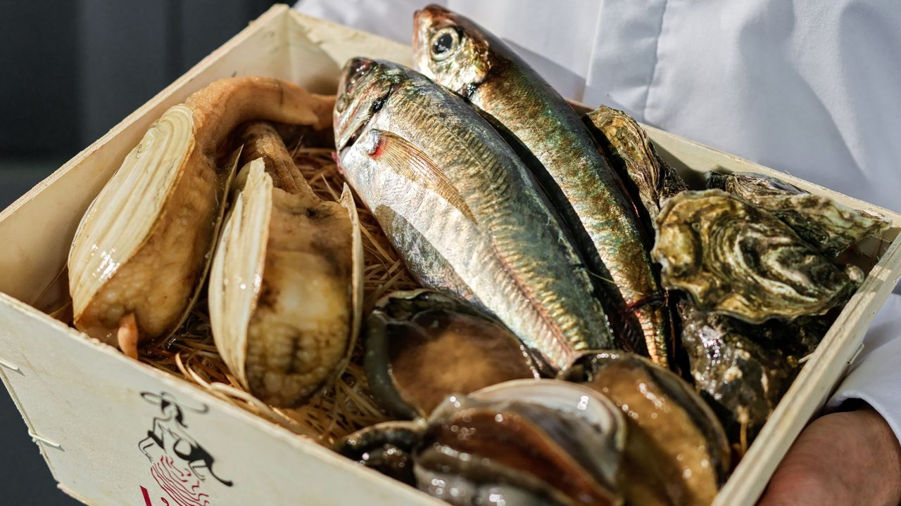
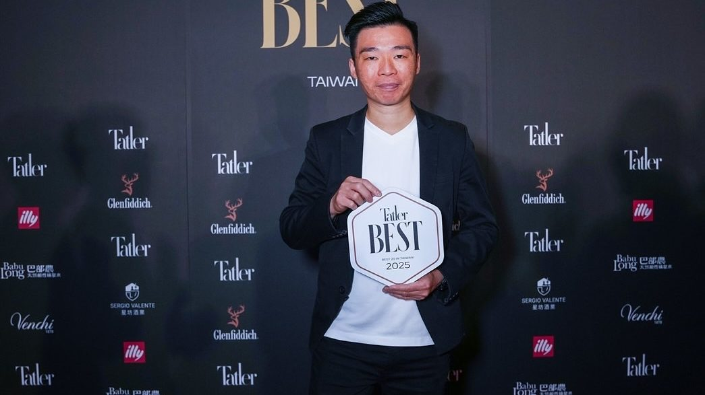
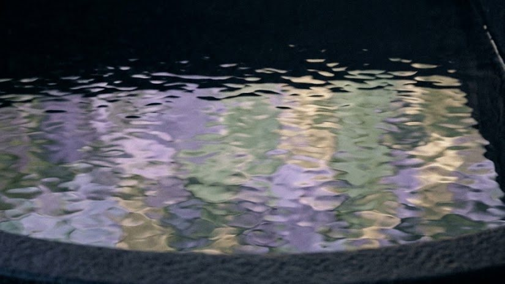
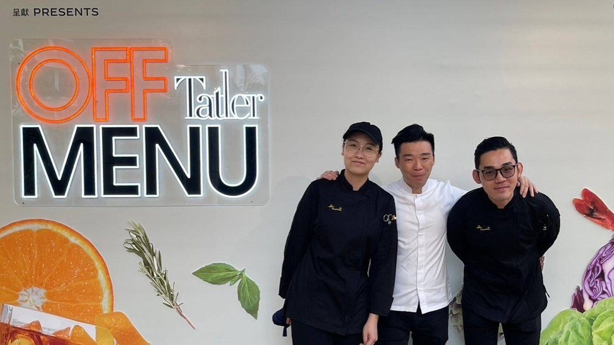
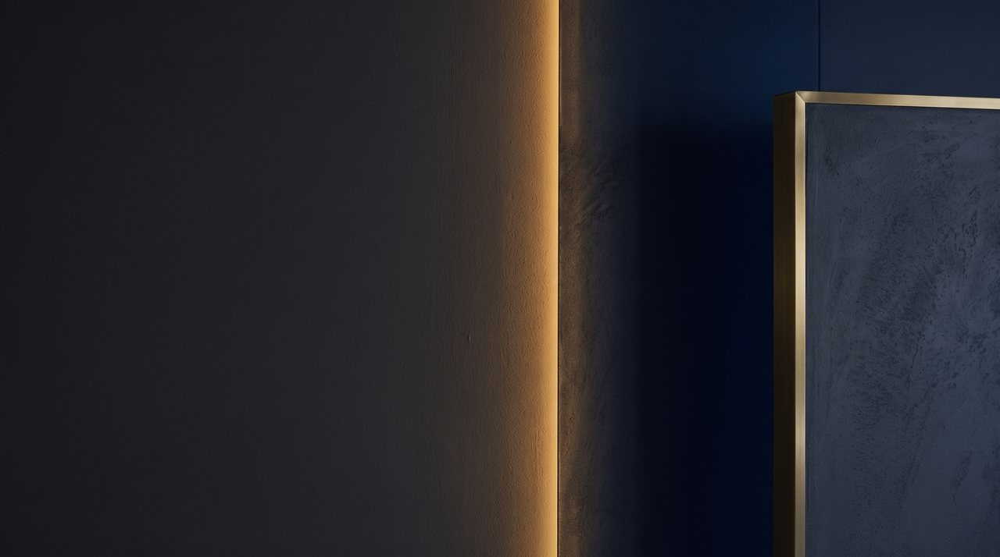
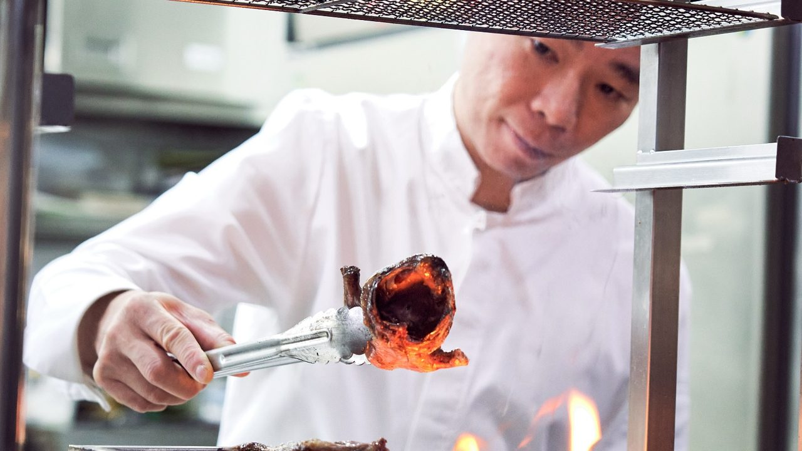

2026・三月聯名
Sola × de nuit
兩個晚上，巴黎 Sola 的 Chef Kosuke Nabeta 來到台北，與古俊基共寫一席。
Nuits
過去的夜晚：獎項、聯名、活動與幕後。
2026・三月聯名
兩個晚上，巴黎 Sola 的 Chef Kosuke Nabeta 來到台北，與古俊基共寫一席。

2026獎項
《臺灣米其林指南 2026》。同年入選 Tatler Best Taiwan 2026 Top 20。

2026幕後
對古俊基而言，食材與季節從來分不開。每一季，從當下最好的食材開始。
2025・冬聯名
設計品牌 DYCTEAM 與 de nuit 的星級聯名。
2025・秋聯名
Neo Brunch：古俊基到 L'Atelier par Yao，與 Chef Yao 做一場秋日白晝的早午餐。

2025獎項
《臺灣米其林指南 2025》。同年獲 Tatler Taiwan 年度 Top 20 與最佳服務獎。

2024・十二月媒體
秋冬菜單以莫內為靈感的專文。
閱讀報導 ↗
2024活動
古俊基代表 de nuit，與亞洲十五位星級主廚及調酒師同台。

2024聯名
Tatler Dining Kitchen 一日限定。古俊基與晶華軒鄔海明師傅，以共同的香港根底，做一席粵法之間的晚餐。

2023幕後
四月，古俊基接任主廚，以時尚法國菜開啟 de nuit 的新篇章。
2021獎項
《臺北臺中米其林指南 2021》——開幕翌年即摘星，此後連年入榜。
米其林指南 ↗2020幕後
三月，信義路一道安靜的騎樓之後，一間以「夜」為名的餐廳，點亮了燈。